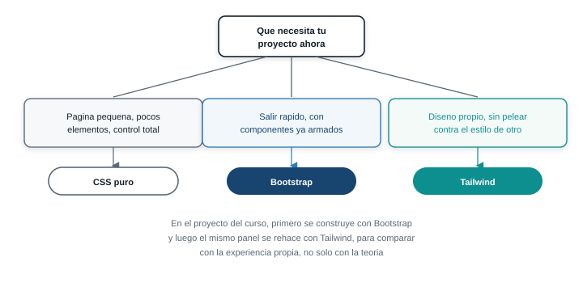

Bootstrap 5. Framework de componentes
Desde como se incluye hasta el panel de catalogo completo.
Como obtener Bootstrap
La forma mas rapida es un CDN: una direccion de internet desde donde el navegador descarga el archivo la primera vez que abres la pagina, sin instalar nada. Elige una opcion para ver el codigo completo y la explicacion de cada linea.
Container, row y col: las tres piezas del grid
Toda maquetacion de Bootstrap se arma anidando estas tres clases. Actívalas en orden y observa como cada una agrega una capa a la estructura.

Reparte las doce columnas entre varios elementos
Mueve el deslizador. El numero de elementos cambia y la clase col-md-N de
cada uno se recalcula para que la fila siga sumando doce.
Breakpoints: la misma columna en tres anchos
Un prefijo de breakpoint agrega una regla que reemplaza la base a partir de cierto ancho, siguiendo la misma logica mobile-first de la Semana 5: la clase sin prefijo manda hasta que el ancho de la pantalla alcanza el prefijo, y a partir de ahi una nueva regla toma el control. Construye la clase de la columna y cambia de dispositivo para ver exactamente en que ancho entra a funcionar cada prefijo.

El marco mide literalmente el ancho indicado por el boton activo. Si no cabe completo en la pantalla, se puede desplazar hacia los lados para verlo entero.
| Prefijo | Ancho minimo |
|---|---|
| (ninguno) | Cualquier ancho, es la base |
sm | 576px |
md | 768px |
lg | 992px |
xl | 1200px |
Utilidades de espaciado: padding y margen
Bootstrap usa una escala fija de seis pasos, del mas chico al mas grande, en vez de numeros sueltos como 13px o 27px. Elige un paso de padding, uno de margen, y agrega margenes de un solo lado.
Padding (relleno interno)Utilidades de color, texto y forma
Estas utilidades resuelven casos donde un componente completo seria exagerado: un fondo de color, un texto alineado, una esquina redondeada, una sombra.
Color de fondobg-primary aplica el azul del tema, y el texto se ajusta a blanco
automaticamente en los colores oscuros de la paleta.
Utilidades Flexbox
Las mismas propiedades de Flexbox que ya conoces de la Semana 5, como clase lista para
usar. Activa d-flex primero: sin ella, las demas utilidades no tienen
ningun efecto porque el contenedor sigue en su display normal.
Botones: clase base mas variante
btn nunca va sola: siempre se acompana de una clase de variante que define
el color segun su intencion, y opcionalmente de una clase de tamano.
Cards por partes
Una card se construye anidando clases dentro de card. Cada una tiene un
trabajo especifico dentro de la tarjeta.
Formularios por partes
Las clases de formulario reemplazan el CSS que escribirias a mano para que cada campo tenga el mismo ancho, el mismo borde y el mismo estado de foco.
Modal: abre y cierra sin JavaScript propio
Haz clic en el boton dentro del marco. El modal es real: abre y cierra gracias al
bootstrap.bundle.min.js cargado adentro.
| Atributo | Que hace |
|---|---|
data-bs-toggle="modal" | Marca el boton que abre el modal cuyo id coincide con data-bs-target |
data-bs-target="#modalDemo" | Apunta al id del modal que debe abrirse |
data-bs-dismiss="modal" | Cierra el modal desde cualquier boton dentro de el |
aria-hidden="true" | Oculta el modal a lectores de pantalla mientras esta cerrado, ya resuelto en la plantilla oficial |
Practica completa: el panel de catalogo
El mismo resultado del taller de la guia, ya construido con todas las clases anteriores. Revisalo en vivo y despliega el codigo cuando quieras compararlo con el tuyo.
Tailwind CSS. Framework utility-first
Desde el Play CDN hasta el mismo panel de catalogo, construido con utilidades.
Como obtener Tailwind
Para aprender y prototipar, un unico script basta: el Play CDN. Elige una
opcion para ver el codigo completo y la explicacion.
La escala de espaciado
El numero despues de p, m o gap no es un pixel
exacto: es un paso dentro de una escala. Elige un paso y mira el valor real en rem y en
pixeles.
| Clase | Valor en rem | Valor en pixeles |
|---|---|---|
p-1 | 0.25rem | 4px |
p-2 | 0.5rem | 8px |
p-4 | 1rem | 16px |
p-8 | 2rem | 32px |
Color y tono: {propiedad}-{color}-{tono}
El tono va en pasos de 100 (muy claro) a 900 (muy oscuro). Elige un color y mueve el tono para ver cuando conviene cambiar el texto a blanco para que siga siendo legible.
ColorTipografia: tamano y peso
text-{tamano} controla el tamano de fuente y font-{peso} el
grosor del trazo. Combina ambas.
Utilidades flexbox
Las mismas propiedades de la Semana 5, con otro nombre. Activa flex
primero: sin ella, el resto no cambia nada visible.
Grid con prefijo responsivo
grid-cols-N reparte N columnas iguales. Un prefijo como md:
reemplaza esa regla desde ese ancho.
Breakpoints: el mismo prefijo mobile-first
Construye la clase responsiva del grid columna por columna y cambia de dispositivo para confirmar en que ancho entra a funcionar cada prefijo, con la misma logica mobile-first: la regla sin prefijo manda hasta que el ancho de pantalla alcanza el prefijo.
El marco mide literalmente el ancho indicado por el boton activo. Si no cabe completo en la pantalla, se puede desplazar hacia los lados para verlo entero.
| Prefijo | Ancho minimo |
|---|---|
| (ninguno) | Cualquier ancho, es la base |
sm: | 640px |
md: | 768px |
lg: | 1024px |
xl: | 1280px |
Estados: hover y focus como prefijo
Un prefijo antes de la utilidad puede describir un estado en vez de un ancho de pantalla. El interruptor simula cada estado sin depender del mouse ni del teclado.
Construye un boton desde cero
A diferencia de Bootstrap, aqui no existe una clase btn. Cada propiedad se
agrega por separado hasta llegar al mismo resultado visual.
Construye una tarjeta desde cero
El mismo resultado de una card de Bootstrap, esta vez sin un nombre de componente: combinando utilidades de borde, sombra y espaciado.
Practica completa: el panel de catalogo
El mismo panel de la Parte 1, reconstruido solo con utilidades de Tailwind. Compara el codigo fuente de las dos versiones.
Cierre: comparar y decidir
Con las dos partes recorridas, ahora se comparan directamente.
El mismo panel, lado a lado, en vivo
Cada version se muestra al ancho real del dispositivo elegido, una debajo de la otra para que el mismo ancho aplique a las dos por igual. Cambia el ancho y activa el producto agotado en los dos marcos al mismo tiempo.

El marco mide literalmente el ancho indicado por el boton activo. Si no cabe completo en la pantalla, se puede desplazar hacia los lados para verlo entero.
Herramienta de decision
Responde las tres preguntas segun tu propio proyecto. La recomendacion usa los mismos criterios de la guia, no gusto personal.

1. Que tan grande es lo que vas a construir
2. Que necesitas primero
3. Que tan comodo te sientes personalizando
Comprobacion rapida
Responde antes de cerrar el laboratorio.
1. Si tres columnas usan col-md-4, cuanto suman en una fila de doce.
2. Cual filosofia entrega piezas minimas, una por propiedad CSS.
3. Cual atributo abre y cierra un modal de Bootstrap sin JavaScript propio.
4. En Tailwind, que ancho minimo activa el prefijo md:.
5. Por que el Play CDN de Tailwind no se usa en produccion.
6. En Bootstrap, cual clase nunca va sola y siempre necesita una variante de color.
7. En Tailwind, cuanto equivale p-4 en pixeles.